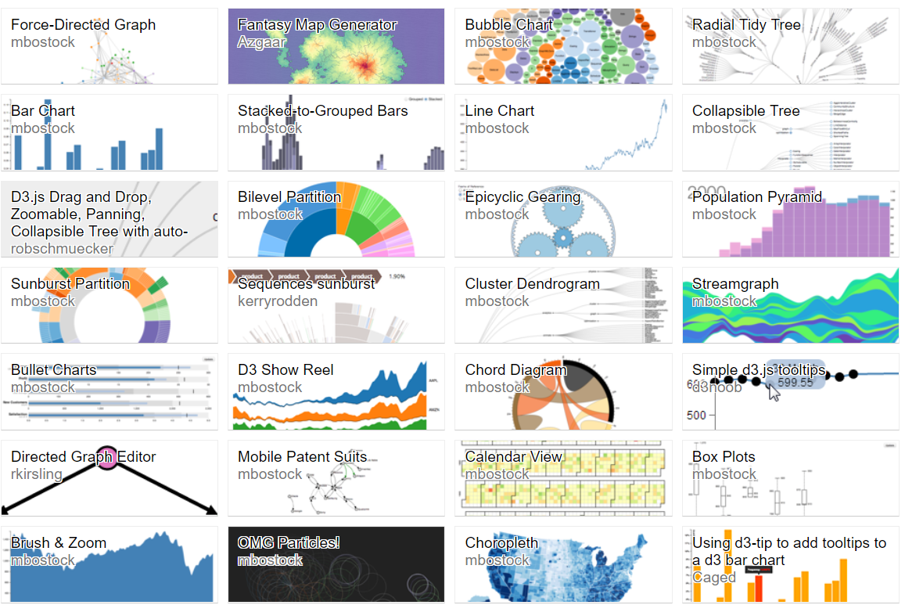
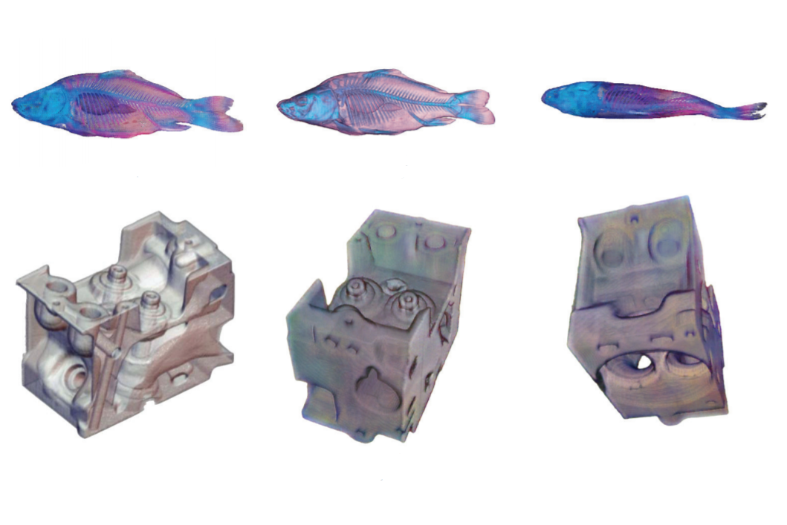
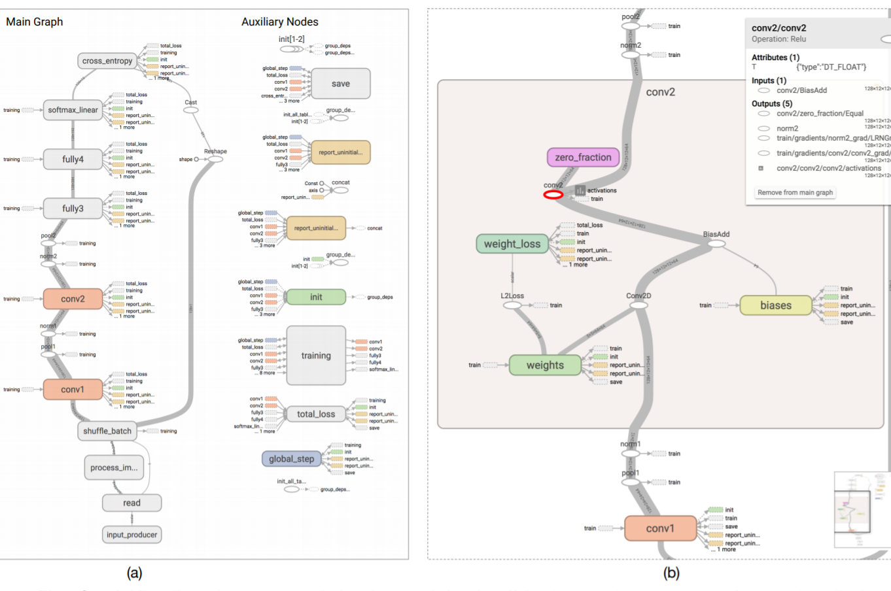

Visualization
a very short guide to general visualization forms and tools
shellywhen
Tools Seminar 05/27/2018
Scenario
Computer-based visualization systems provide visual representations of datasets designed to help people carry out tasks more effectively.
Visualization is suitable when there is a need to augment human capabilities rather than replace people with computational decision-making methods.
Overview
Generally, visualization is used to gain or show insights through data.
-
 Information Visualization
not only statistical charts; various visualization forms help to show multi-attributes, topological structure and complex relationships
-
 Scientific Visualization
a sub-topic of computer graphics, emphasising on realistic rederings of volumes, surfaces, illumination sources, etc.
-
 Selected Topics
novel or practical visualization including learning visualization(tensorboard), dimension reduction(t-SNE, MDS, etc.), sparklines
Tables
most commonly seen data type
Statistical visualization provides an overview of the tabular data and is widely used.
- Software: Excel, Tableau, (even Adobe Illustrator)
- py Tools:matplotlib, plotly
High-dimensional Data
different visualization forms treat different scale data
Graph/Network
set of relationship
- Visualization Forms: node-link diagram, matrix
- Trees: tree map, bubble chart, sunburst
- Analysis Toolkit: networkx.py
- Layout Tools: matplotlib.py, plotly.py, TikZ, Gephi
Time Series
animation/small multiples
- Line Graph/Bar Charts: intuitive, simplest
- Stacked Area Chart: commutive total & individual components of that change
- Gantt Chart: a horizontal bar showing the event dependencies or current work status
- Stream Graph: stacked area graph displayed around central horizontal axis like flowing liquid
- Heat Map: check your github contribution :-)
- Polar Area Diagram: Nightingale Rose Charts
Text Visualization
get an overview of the overwhelming text
- Survey for Text Visualization: boring, don't click me
- Wordle Creation: a guide to make a not bad worldle
- Text Analysis: everything for text analysis
- Topic Model: just ask Google
Tookits
- look fine
- interactive
- easy to modify
- webGL